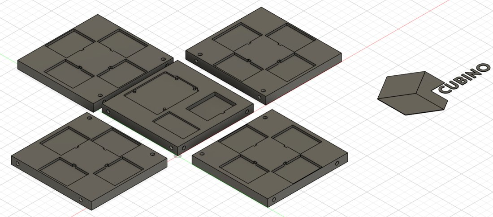
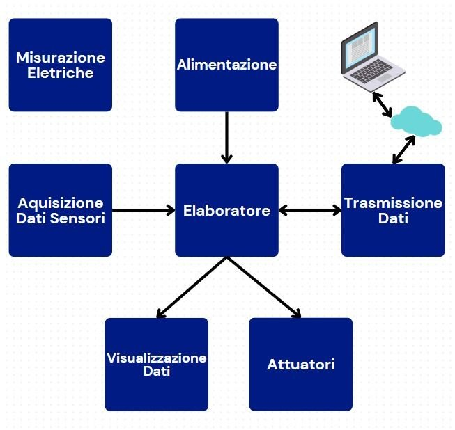
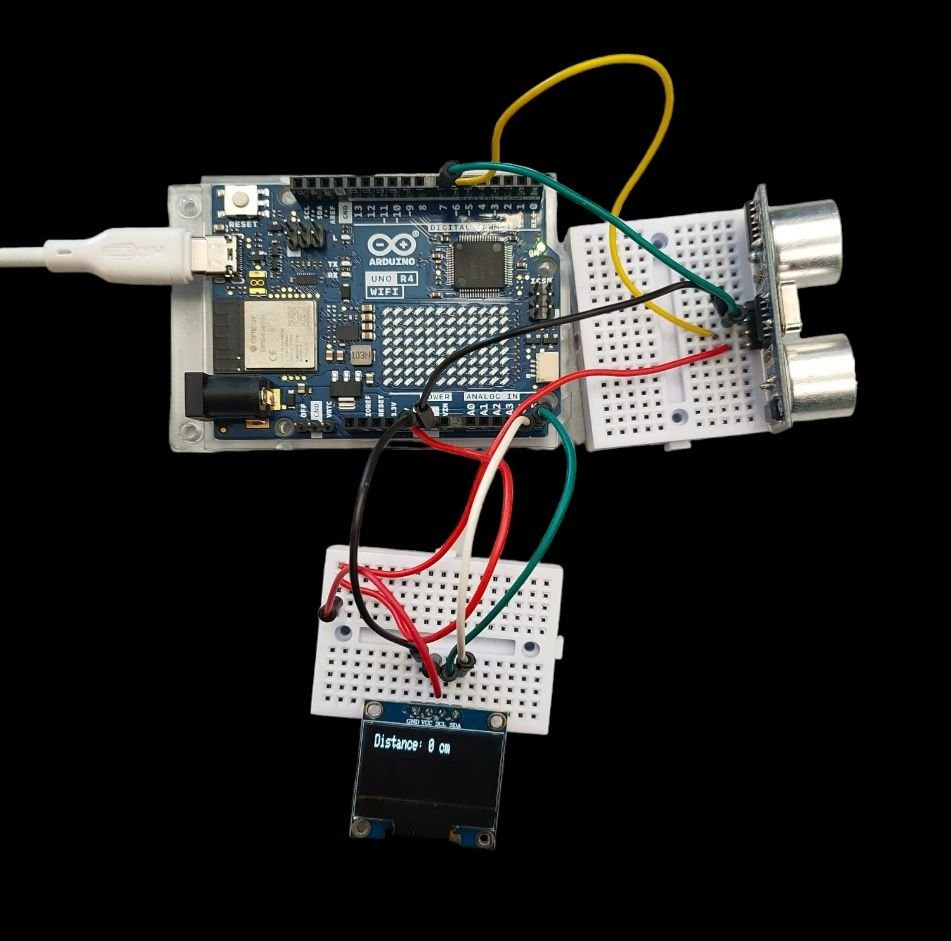

Alternanza scuola-lavoro 2024 · Prototipo
Cubino – il kit per imparare Arduino
Un kit educativo in un cubo modulare stampato in 3D: hardware, strumenti di misura e percorso guidato per imparare l’elettronica con Arduino. Nato per diventare un prodotto commerciale per scuole e appassionati.

L’idea
L’elettronica è un settore affascinante ma complesso, e per chi parte da zero non è facile capire da dove cominciare. Cubino risponde con un’unica soluzione, economica e completa, che racchiude l’hardware, gli strumenti e le esercitazioni guidate per imparare Arduino, sia dal lato hardware sia da quello software, con un approccio pensato per imparare giocando.
È rivolto principalmente agli studenti delle scuole superiori, ma anche a insegnanti in cerca di risorse didattiche da portare in classe e ad appassionati che si avvicinano per la prima volta a questo mondo.
Il prodotto
Un kit di elettronica educativa basato su Arduino UNO R4 WiFi, racchiuso in un cubo modulare stampato in 3D, da cui il nome. All’interno trovano posto la scheda di controllo con connettività Wi-Fi, strumenti di misura, sensori e componenti, un display e l’alimentazione, anche solare, organizzati in moduli.
Architettura a blocchi
Il sistema è impostato per blocchi funzionali: elaborazione, alimentazione, acquisizione dei dati dai sensori, misure elettriche, visualizzazione, attuatori e trasmissione dei dati verso un portale web. Questa struttura modulare permette di ampliare il kit con nuovi blocchi senza riprogettarlo da zero.

Percorso didattico
Le esercitazioni crescono per livelli: dai principi base (leggi di Ohm, resistenze, capacità) alle porte logiche, ai semiconduttori e all’elettronica analogica, fino a sensori, attuatori, comunicazione wireless, energia rinnovabile, domotica e progetti liberi. In tutto sono pianificati 18 blocchi tematici.
Ogni esercitazione segue lo stesso schema: introduzione, componenti hardware e software, passi guidati e conclusione. Sono già complete di guida, schema di collegamento e codice quelle su sensore a ultrasuoni, sensore di temperatura e umidità e LED RGB.

Progettazione e prototipo
La struttura è stata progettata al CAD a partire da una bozza dimensionale, con moduli pensati per la stampa 3D in PLA e per essere assemblati a formare il cubo. Il primo prototipo è stato stampato in 3D e assemblato.
Per verificare le esercitazioni è stato scritto un firmware di prova che le riunisce in un unico programma, selezionabili da comando, con visualizzazione dei dati sul display.
Piattaforma web
Il kit è pensato per essere accompagnato da una piattaforma web (React e TypeScript) con il percorso guidato delle esercitazioni e aree distinte per studenti e docenti. La piattaforma è prevista nel sito finale del prodotto; nel prototipo ne è stata impostata solo la struttura iniziale.
Analisi dei costi
È stata condotta un’analisi dei costi di realizzazione del kit, componente per componente, con confronto tra fornitori.
Contesto e collaborazione
L’idea nasce nel 2022. Il progetto è stato sviluppato nel 2024 durante l’alternanza scuola-lavoro presso la facoltà di ingegneria elettronica dell’Università Mediterranea di Reggio Calabria, in collaborazione con il referente della facoltà.
Il mio contributo
Il progetto è stato portato avanti da un team di tre persone in circa sei mesi. Mi sono occupato del progetto a 360 gradi: coordinamento, realizzazione dell’hardware, definizione delle esercitazioni tecniche da implementare, product development e monetizzazione, con la relativa validazione economica del prodotto.
Stato e prospettive
Realizzato
- Concept e architettura a blocchi
- Primo prototipo fisico, stampato in 3D e assemblato
- Prime esercitazioni complete
- Analisi dei costi
- Bozza di business plan
Prossimi passi
- Completare i blocchi di esercitazioni
- Sviluppare la piattaforma web
- Definire prezzi e modello di business
- Valutare la commercializzazione, per la quale il progetto conserva un forte potenziale
Riservatezza e diritti
Cubino è un progetto con finalità commerciali ancora in sviluppo. Nome, design, contenuti didattici, schemi, codice e documentazione tecnica sono riservati e non pubblici; il materiale di dettaglio è disponibile su richiesta, previo accordo di riservatezza.
© Giovanni Pio Triulcio e team. Tutti i diritti riservati.